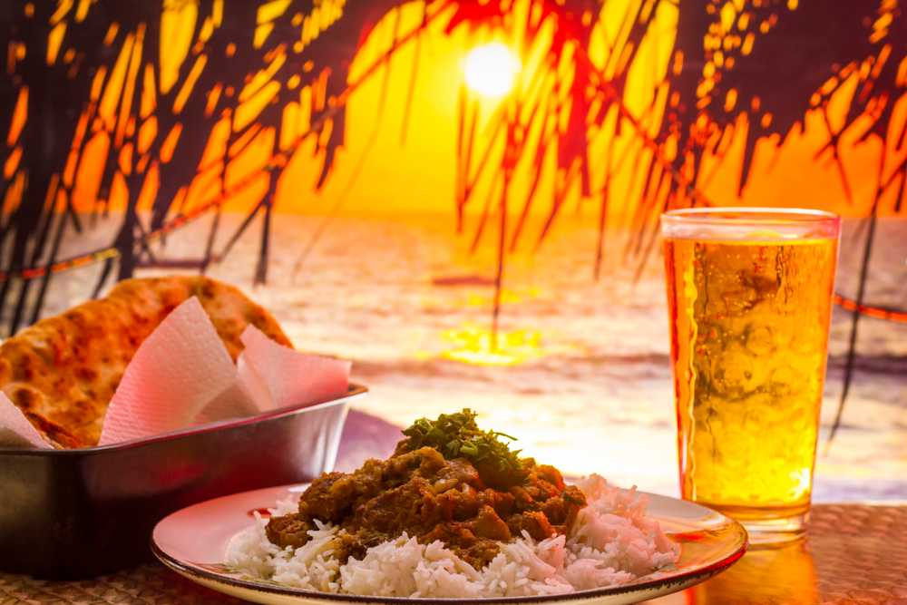

Goa is a state located in the western part of India, famous for its beautiful beaches, unique culture, and
vibrant nightlife. The state was a Portuguese colony for over 450 years, and this is reflected in its
architecture, food, and traditions. Goa is also known for its rich history, which can be explored through its
many museums and historic landmarks.
Goa's Vibrant Cuisine

Goa is a small coastal state located in the western region of India, famous for its unique blend of Indian
and Portuguese culture. Goa's cuisine is a reflection of its diverse history and culture. The state's
cuisine is known for its vibrant and spicy flavors, with seafood being a significant component of most
dishes. The staple food of Goa is rice and fish curry, known as 'Xitt Codi' in the local Konkani language.
Goan cuisine has a distinct taste due to the use of spices like black pepper, cumin, coriander, and
turmeric. The use of coconut is also quite prevalent in Goan cooking, and it can be found in almost all
dishes, including curries, sweets, and snacks.
One of the most popular dishes of Goa is 'Vindaloo,' a spicy meat dish that originated from the Portuguese dish 'Carne de Vinha d'Alhos.' Vindaloo is made by marinating pork or beef in a mixture of vinegar, garlic, ginger, and spices like cinnamon, cloves, and red chili powder. The meat is then slow-cooked in the marinade until tender and succulent. Another popular dish is 'Sorpotel,' a spicy stew made with pork, vinegar, and spices. This dish is usually served with a side of sannas, which are a type of steamed rice cakes.
Goa's cuisine also has a range of vegetarian options, with dishes like 'Moongachi Gathi' and 'Bhaji' being some of the most popular ones. 'Moongachi Gathi' is a coconut-based dish made with sprouted moong beans, while 'Bhaji' is a mixed vegetable dish made with coconut and spices.
Seafood is an integral part of Goan cuisine, and the state is known for its fresh and flavorful seafood dishes. The most popular seafood dish is 'Fish Curry Rice,' which is a simple yet delicious dish made with fish, coconut, and spices. Other popular seafood dishes include 'Prawn Curry,' 'Crab Xec Xec,' and 'Fish Recheado.'

In conclusion, Goan cuisine is a delightful blend of Indian and Portuguese flavors that has evolved over the
years. The cuisine's unique flavors and use of spices make it stand out from other Indian cuisines. From
spicy meat dishes to flavorful seafood curries, Goan cuisine has something for everyone. So, if you're a
food lover, make sure to try out the delectable dishes of Goa on your next visit!